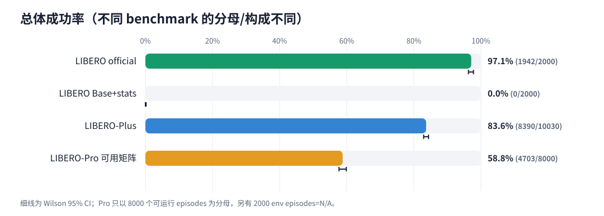
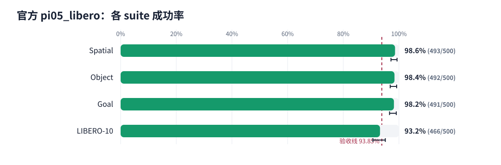
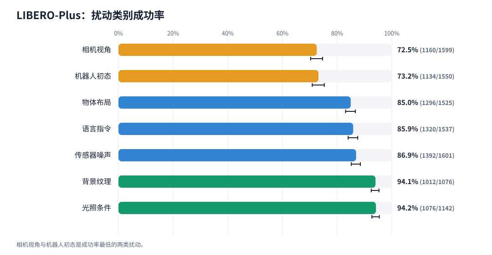
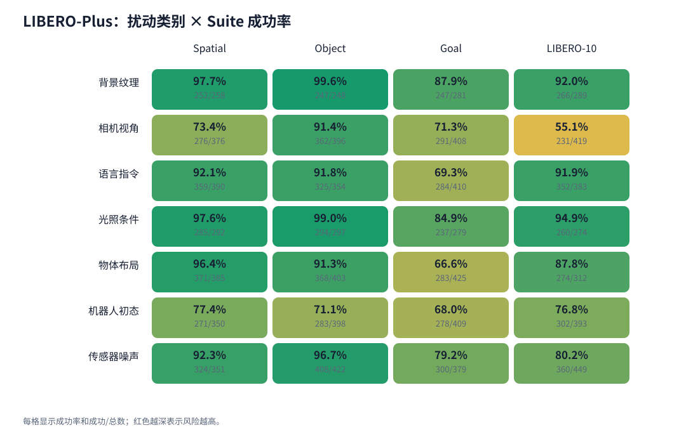
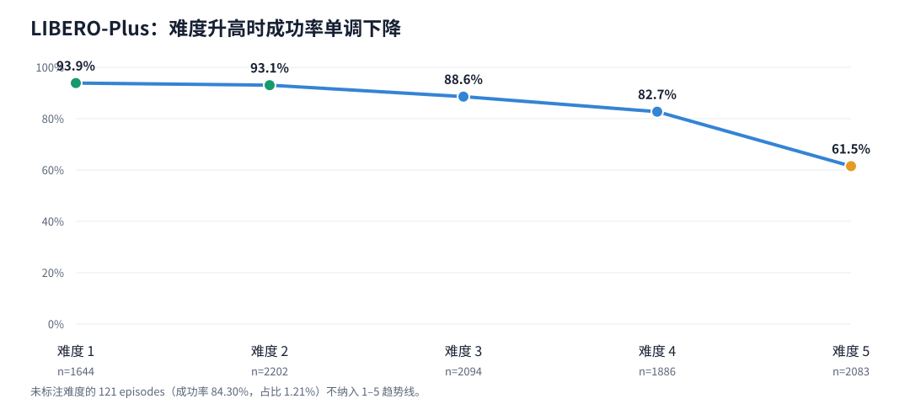
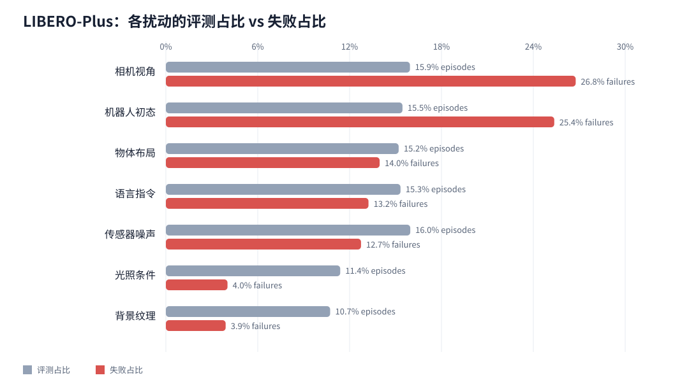
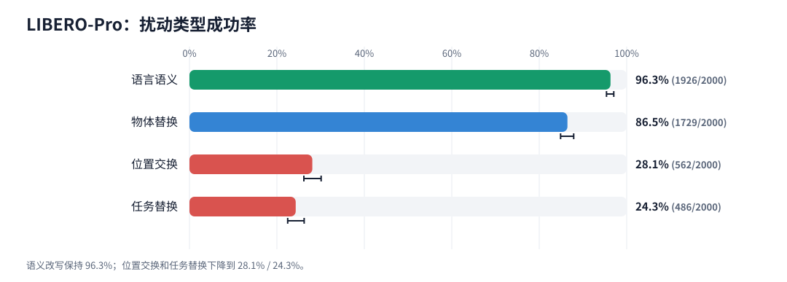
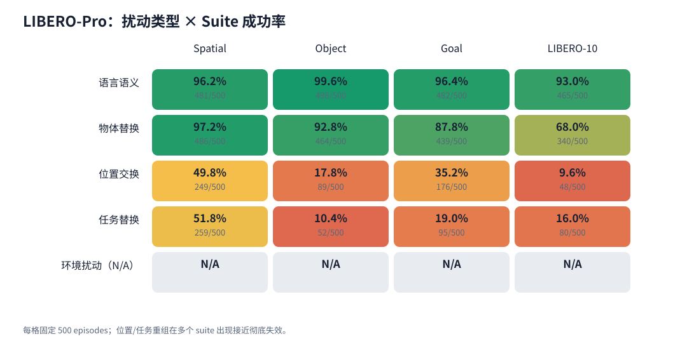
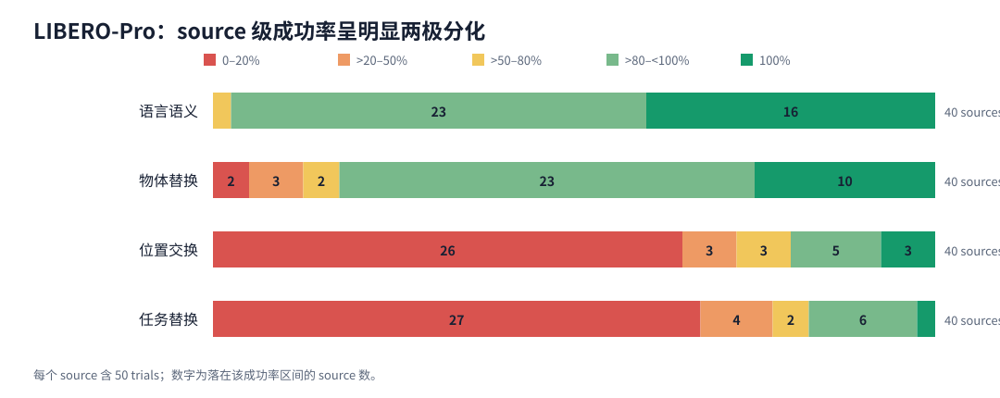
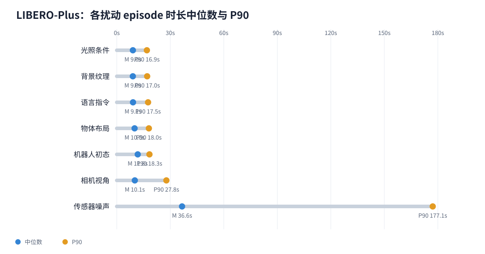

1. 一页结论
Base 权重即使搭配 LIBERO norm stats/assets 仍为 0%，与微调权重差 97.1 个百分点。
相机视角+机器人初态占 52.1% 失败；难度 4–5 占 68.8% 失败。
位置交换+任务替换只占 50% 评测量，却贡献 89.5% 失败。
全部普通策略失败均走满 max_steps；评测连接、EGL 和 checkpoint 错误没有混入失败率。

| Benchmark | 协议 | 已评/协议 | 成功/已评 | 成功率 | Wilson 95% CI | Infra |
|---|---|---|---|---|---|---|
| LIBERO official | pi05_libero | 2000/2000 | 1942/2000 | 97.10% | 96.27% – 97.75% | 0 |
| LIBERO Base+stats | pi05_base + LIBERO assets | 2000/2000 | 0/2000 | 0.00% | 0.00% – 0.19% | 0 |
| LIBERO Base-native | pi05_base native assets | 0/2000 (N/A) | N/A | N/A | N/A | 0 |
| LIBERO-Plus | pi05_libero | 10030/10030 | 8390/10030 | 83.65% | 82.91% – 84.36% | 0 |
| LIBERO-Pro 可用矩阵 | pi05_libero | 8000/10000 | 4703/8000 | 58.79% | 57.70% – 59.86% | 0 |
2. 原始 LIBERO：97.10% 通过验收，余下失败集中在少数任务

| Suite | 成功/总数 | 成功率 | Wilson 95% CI |
|---|---|---|---|
| Spatial | 493/500 | 98.6% | 97.1% – 99.3% |
| Object | 492/500 | 98.4% | 96.9% – 99.2% |
| Goal | 491/500 | 98.2% | 96.6% – 99.1% |
| LIBERO-10 | 466/500 | 93.2% | 90.6% – 95.1% |
在同样的 4 suites × 10 tasks × 50 trials 矩阵上，pi05_base + LIBERO assets 为 0/2000。由于所有 Base 失败都走满步数上限，这是能力对照，而不是服务崩溃。Base-native 缺少 LIBERO norm stats，所以严格记为 N/A。
3. LIBERO-Plus：视角、初态和高难度是主要失败源
episode 微平均为 83.65%，四个 suite 等权宏平均为 83.78%。两者很接近，但 category/difficulty 的分母不均匀，不应把不同维度的平均数混为同一指标。

| 扰动类别 | 成功/总数 | 成功率 | 失败数 |
|---|---|---|---|
| 背景纹理 | 1012/1076 | 94.1% | 64 |
| 相机视角 | 1160/1599 | 72.5% | 439 |
| 语言指令 | 1320/1537 | 85.9% | 217 |
| 光照条件 | 1076/1142 | 94.2% | 66 |
| 物体布局 | 1296/1525 | 85.0% | 229 |
| 机器人初态 | 1134/1550 | 73.2% | 416 |
| 传感器噪声 | 1392/1601 | 86.9% | 209 |



难度 1–5 从 93.86% 单调下降到 61.50%，净降 32.4 个百分点。难度 4–5 仅占 39.6% episodes，但占 68.8% 失败。建议优先建立「相机视角×难度5」和「机器人初态×难度4–5」定向回归集。
4. LIBERO-Pro：语义稳健，几何/任务重组显著脆弱
| 扰动 | 成功/总数 | 成功率 | 失败数 |
|---|---|---|---|
| 语言语义 | 1926/2000 | 96.3% | 74 |
| 物体替换 | 1729/2000 | 86.5% | 271 |
| 位置交换 | 562/2000 | 28.1% | 1438 |
| 任务替换 | 486/2000 | 24.3% | 1514 |



位置交换有 20/40 个 source 完全失败，任务替换为 19/40；source 成功率中位数仅 1% / 2%。这是「大量 source 接近彻底失效，少数 source 仍表现很好」的两极分化，所以后续应同时跟踪 micro-average、source 中位数和零成功 source 数。
env cells，合计 2000 episodes。报告的 58.79% 仅以 8000 个可运行 episodes 为分母；缺失部分是 N/A，不是失败。5. 运行成本：Sensor Noise 是 Plus 时间长尾的核心来源

episode duration 在多 GPU/server 下可以并行重叠，所以时长总和不等于实际墙钟时间。该指标适合用于定位类别级运行成本，不应被解释为模型成功率或单 GPU 吞吐率。
6. 建议的研发优先级
增强几何关系泛化
针对位置交换、机器人初态和相机视角扩充训练/回归数据；这些是失败最集中的方向。
单独治理高难度长时序任务
Plus 难度5为 61.50%；原始 LIBERO 最难 moka-pot 任务为 60%。对长序列、多物体和状态恢复做专项回归。
将 source 级指标纳入验收
除总成功率外，固定报告 source 中位数、零成功 source 数和扰动×suite 热力图，防止均值掩盖两极分化。
7. 方法、复现与边界
- 数据集：official 2000 + Base+assets 2000 + Plus 10030 + Pro 8000 = 22,030 terminal episodes。
- 派生统计：metrics.json 和 CSV 表格；复现脚本：generate_report.py。
- 脚本仅使用 Python 标准库，并硬校验矩阵大小、唯一 ID、terminal 状态、错误分类和录像写入状态。
- Wilson 95% CI 是 episode 级描述，不消除同 task/source 内相关性。Plus 每变体 1 trial；Pro 每 source 50 trials，因此另报 source 分布。
- Plus 按 suite 使用独立 policy server 分片；环境 seed=7，policy JAX RNG key=0 按 server 独立作用。
- 这是固定 checkpoint/协议下的描述性评测，不是训练方法的因果实验。
完整最终审计：report.json · Markdown 版：report_zh.md